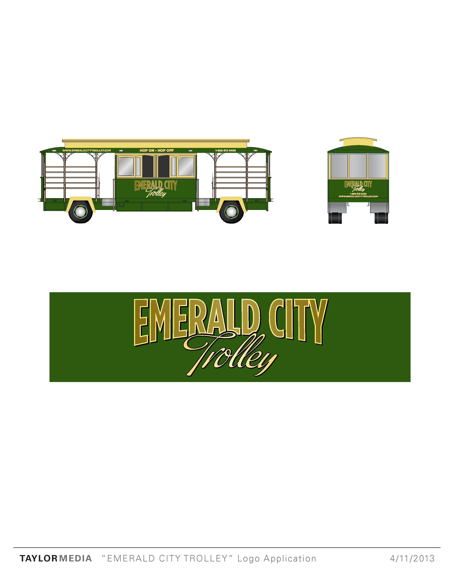

Emerald City Trolley was just starting out in Seattle. Building a fleet of classic trolley-style tour vehicles. They needed a cohesive style that would become an immediately recognizable icon for tourists throughout the city. It was crucial to the hop-on, hop-off model of touring that customers were able to recognise the vehicles from a distance. My constribution was a complete package of type, color, and vehicle wraps.
